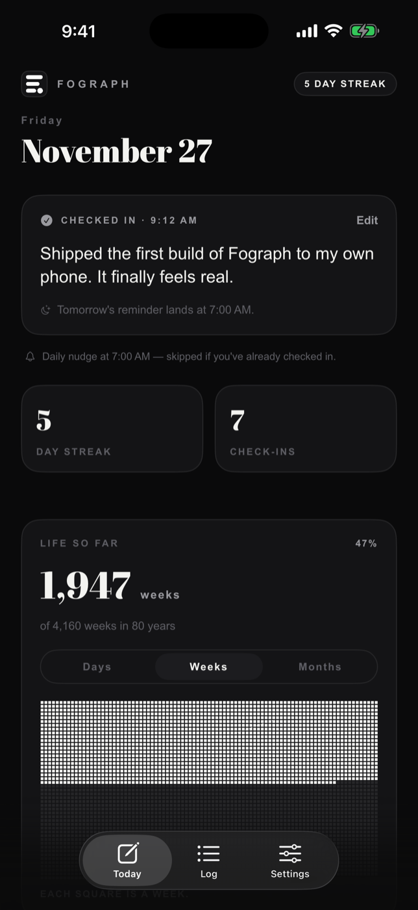

The habit
One sentence, on purpose
A 140-character cap keeps the habit small enough to keep. No blank page, no prompt to ignore — just today, in one line.
iPhone & iPad · Free
Write one line about today. Fograph stamps it with the date and time and keeps it in a log you can read back month by month.
Free · No account · Nothing leaves your device


How it works
The habit
A 140-character cap keeps the habit small enough to keep. No blank page, no prompt to ignore — just today, in one line.
The nudge
One reminder a day, scheduled on your device. Write your sentence before seven and it skips itself, so you're never nagged about something you've done.
The record
Every sentence is grouped by month and stamped with the year, month, day and time you wrote it. Scroll back a week or a year.
The long view
Add your birthday in Settings and Fograph counts the days, weeks and months you've lived, one square each, against the life you expect.
New in 1.2
Add your birthday and how long you expect to live. Fograph counts the days, weeks and months you've lived and draws each one as a square — solid for the time behind you, faint for what's ahead.
Switch between days, weeks and months and the grid redraws itself to match, so a year reads as fifty-two weeks, twelve months, or three hundred and sixty-five days.
Your birthday and lifespan stay on your device, like everything else here.
of 4,160 weeks in 80 years
Each square is a week.
No account. No cloud.
No feeds, no streaks, no likes.
Available now
Open it once a day, write one line, close it. That's the whole app.